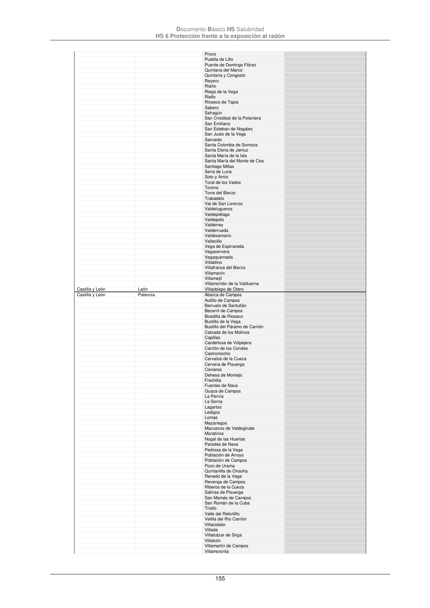

DB-HS Salubridad · edición 2022-06-14 · capa oficial
Documento DB-HS-oficial · SHA-256 del PDF 68df3caacc95f71aee2ec1ba7b2c65ae66155c21e3a8785521b8fdd4fd640d3b
Página física 155 de 184.
Copia fiel del PDF fuente · Fuente oficial
Ficha de la disposición en la fuente oficial
Formato: Texto de la página (Markdown)
Documento Básico HS Salubridad HS 6 Protección frente a la exposición al radón 155 Prioro Puebla de Lillo Puente de Domingo Flórez Quintana del Marco Quintana y Congosto Reyero Riaño Riego de la Vega Riello Rioseco de Tapia Sabero Sahagún San Cristóbal de la Polantera San Emiliano San Esteban de Nogales San Justo de la Vega Sancedo Santa Colomba de Somoza Santa Elena de Jamuz Santa María de la Isla Santa María del Monte de Cea Santiago Millas Sena de Luna Soto y Amío Toral de los Vados Toreno Torre del Bierzo Trabadelo Val de San Lorenzo Valdelugueros Valdepiélago Valdepolo Valderrey Valderrueda Valdesamario Vallecillo Vega de Espinareda Vegacervera Vegaquemada Villablino Villafranca del Bierzo Villamanín Villamejil Villamontán de la Valduerna Castilla y León León Villaobispo de Otero Castilla y León Palencia Abarca de Campos Autillo de Campos Barruelo de Santullán Becerril de Campos Boadilla de Rioseco Bustillo de la Vega Bustillo del Páramo de Carrión Calzada de los Molinos Capillas Cardeñosa de Volpejera Carrión de los Condes Castromocho Cervatos de la Cueza Cervera de Pisuerga Cisneros Dehesa de Montejo Frechilla Fuentes de Nava Guaza de Campos La Pernía La Serna Lagartos Ledigos Lomas Mazariegos Mazuecos de Valdeginate Moratinos Nogal de las Huertas Paredes de Nava Pedrosa de la Vega Población de Arroyo Población de Campos Pozo de Urama Quintanilla de Onsoña Renedo de la Vega Revenga de Campos Riberos de la Cueza Salinas de Pisuerga San Mamés de Campos San Román de la Cuba Triollo Valle del Retortillo Velilla del Río Carrión Villacidaler Villada Villalcázar de Sirga Villalcón Villamartín de Campos Villamoronta

Datos candidatos: compruebe celdas y notas en el PDF.